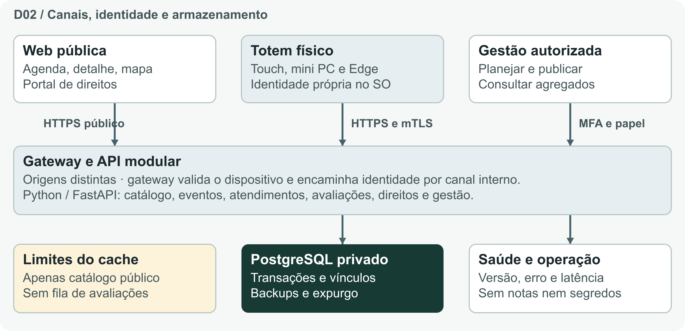
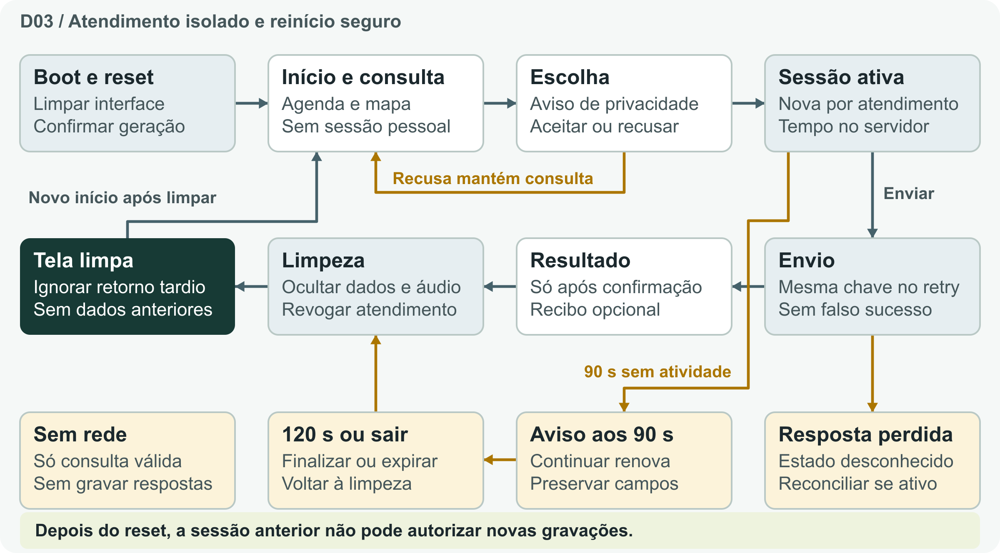
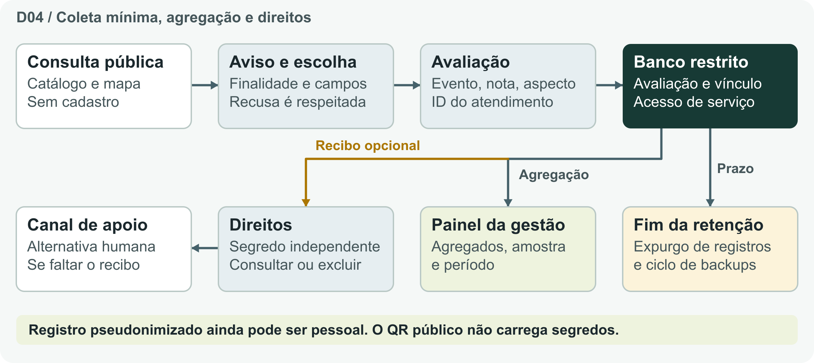

Equipe Onix - 35 · HackaRun 2026 · Missão 1
Arquitetura dos totens e LGPD
A arquitetura propõe uma aplicação touch separada, um gateway que valida a identidade do equipamento, uma API modular em Python/FastAPI e PostgreSQL privado. O ambiente local de referência usa HTML, CSS, JavaScript, Python e SQLite.



Regras que passam para a implementação
- Totem em quiosque gerenciado: sessão curta vinculada à geração, revogação e tela limpa a cada visitante.
- Aviso aos 90 s, encerramento aos 120 s de inatividade e possibilidade de extensão; validar no hardware.
- Consulta pública válida na falha de rede. Envio sem confirmação fica desconhecido, sem fila offline de avaliações.
- Recibo privado opcional separado da sessão e do QR público. Direitos e retenção dependem de política aprovada.
- Sem identificadores civis no formulário; nota e aspecto estruturados. Agregados na gestão, sem resposta individual.
Especificação oficial
Anexar CONTRATOS_TOTENS.json v1.1 e vincular o Anexo A do PDF. O contrato descreve 16 rotas propostas. Ligar B03, B04, B05 e B08. Validar mudanças de rotas, sessão e dados em decisão técnica versionada.
| Aceite | Evidência futura |
|---|---|
| Q03 | Token/recibo A não acessa B; recusa não cria avaliação; exclusão verificada no armazenamento. |
| Q05 | Finalizar, voltar, recarregar e resposta tardia não revelam atendimento anterior. |
| Q06 | Aviso, continuar e ao menos dez extensões preservam formulário; relógio servidor prevalece. |
| Q07 | Timeout sem falso sucesso; boot limpo; dispositivo revogado falha; chave do equipamento fora do JavaScript. |
| Q10 | Touch/alcance/brilho, tentativas de saída do quiosque, manutenção e restauração no equipamento real. |